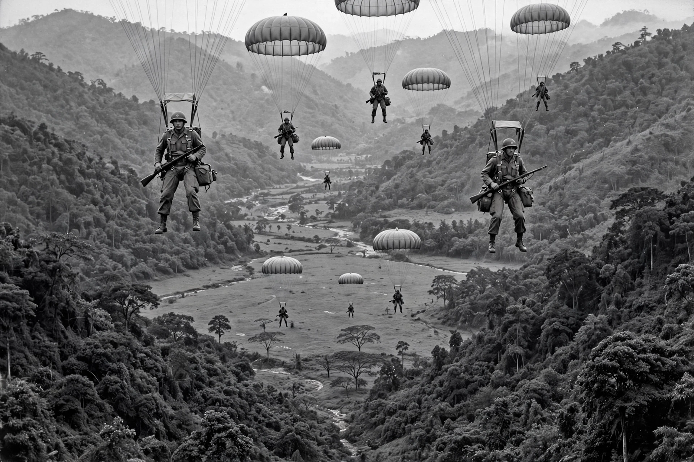

Battle of Dien Bien Phu
From Wikipedia, the free encyclopedia
| Battle of Dien Bien Phu | |
|---|---|
 | |
| Date | 13 March – 7 May 1954 |
| Location | Dien Bien Phu, northwestern Vietnam |
| Result | Decisive Viet Minh victory |
| Belligerents | French Union vs. Viet Minh |
| Commanders | Christian de Castries; Henri Navarre — Vo Nguyen Giap |
| Strength | ~14,000–16,000 French Union troops; ~50,000 Viet Minh combat troops plus large support forces |
The Battle of Dien Bien Phu (French: Bataille de Diên Biên Phu) was a climactic confrontation of the First Indochina War between the French Union's French Far East Expeditionary Corps and Viet Minh communist-nationalist revolutionaries. The battle occurred between 13 March and 7 May 1954 and culminated in a comprehensive French defeat that effectively ended the war.
Background
In 1953, French commander General Henri Navarre sought a decisive battle to strengthen France's negotiating position. French paratroopers occupied the valley of Dien Bien Phu, near the Laotian border, intending to draw the Viet Minh into a pitched battle in which superior French firepower would prevail. The strongpoint was a fortified camp of strongpoints with codenames such as Beatrice, Gabrielle, Anne-Marie, Dominique, Huguette, Claudine, Eliane and Isabelle, defended under Colonel (later Brigadier General) Christian de Castries.
The siege
Viet Minh commander Vo Nguyen Giap surrounded the valley with some 50,000 troops and, with enormous logistical effort involving hundreds of thousands of porters, hauled disassembled artillery and anti-aircraft guns through jungle and over mountains into positions overlooking the French camp. Viet Minh artillery opened fire on 13 March 1954; the outlying strongpoints Beatrice and Gabrielle fell within days. Monsoon rains flooded trenches, the airstrip became unusable, and French resupply depended ever more precariously on parachute drops, many of which fell into Viet Minh hands.
Outcome
After a siege of nearly two months, the last French positions were overrun on 7 May 1954. Around 11,000–12,000 French Union troops were taken prisoner; many died in captivity or on forced marches to prison camps. The defeat shattered French resolve: the following day the Indochina phase of the Geneva Conference opened, and the resulting Geneva Accords partitioned Vietnam at the 17th parallel and ended French colonial rule in Indochina.
Legacy
Dien Bien Phu became a symbol of the vulnerability of Western expeditionary forces to determined guerrilla armies supported by a mobilised population, and is frequently cited as a turning point in the history of decolonisation. See also First Indochina War and Cold War era conflicts.